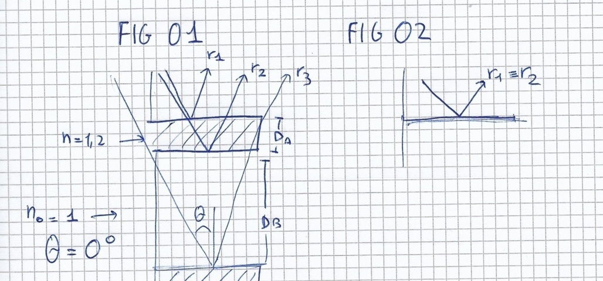

Schrodingers_Bat26 ago 2018, 22:07
Una particolare specie di farfalla ha le ali che appaiono gialle per effetto della rifrazione della luce su delle strutture vitree dette aggetti, che si estendono parallelamente alle ali da un asse centrale parallelo all'asse della farfalla. Si sa che l'indice di rifrazione degli aggetti vale n=1,2 , che sono due per ala, che ciascuno ha spessore \(D_A=50nm\) e che sono distanti (in aria) \(D_B=220nm\) (FIG1, spero si veda e che i dati siano corretti). In riferimento alla figura, considerando i raggi incidenti perpendicolari alle ali, come l'osservatore (nel disegno l'angolo di incidenza è esagerato per far vedere le riflessioni):
A) determinare la lunghezza d'onda dei massimi di interferenza delle coppie di raggi r1-r2, r1-r3, r2-r3. Quale tra queste può spiegare il colore giallo delle ali della farfalla?
B) Dire qualitativamente come cambia la percezione del colore se la farfalla, pur rimanendo ferma, inizia a sbattere le ali.
C) Una mutazione genetica fa sì che gli aggetti si riducano da 2 a 1, e che il loro spessore diventi trascurabile rispetto alle lunghezze d'onda della luce(FIG2). Come appaiono ora le ali della farfalla?
D) Supponiamo di avere una farfalla le cui ali sono gialle, ma non per effetto della rifrazione. Quale altro meccanismo di interazione materia-luce potrebbe spiegare questo colore?
E) Supponiamo di avere una farfalla dalle ali gialle. Come si può, con un semplice esperimento, determinare il meccanismo (rifrazione o altro) all'origine di tale colore?
-
Allegati
-

- iCopy 2018-08-26 10-03-32 (FILEMINIMIZER) (FILEMINIMIZER) (FILEMINIMIZER).jpg (167.03 KiB) Visto 6855 volte
nicarepo27 ago 2018, 13:34
Puoi rifare il disegno con \(r_3\) che esce dallo stesso fascio? :D
Si tratta di un esercizio classico di interferenza da lamina sottile, con l'aggiunta di qualche quesito qualitativo... Partendo da zero:
1) I fattori a cui bisogna stare attenti sono due: le differenze di cammini dei raggi in materiali diversi e la variazione di fase in seguito alla riflessione, che avviene solo nella riflessione di un materiale con indice di rifrazione maggiore rispetto a quello in cui si trova l'onda.
Affinché si verifichi interferenza costruttiva, la differenza di cammini di due raggi deve essere un multiplo intero della lunghezza d'onda (da determinare).
Quindi \(\Delta L = m \lambda \) con \(m=0,1,2,3...\). Partiamo dai raggi \(r_1\) e \(r_2\). Allora: \(r_1\) cambia la fase di \(\pi\) durante la riflessione (\(r_2\) no perché è in un mezzo con \(n\) maggiore) e intanto \(r_2\) percorre un cammino di \(2D_t n\) metri in più rispetto a \(r_1\). Quindi:
\(\Delta L = 2D_t n + \lambda /2 = m \lambda \longrightarrow \lambda= \frac{2D_t n}{m-1/2}\)
Sostituendo i dati e \(m\) si ottengono le seguenti lunghezze d'onda: \(\lambda_1=240nm, \lambda_2=80nm\) e così via a scendere.
Sapendo che le lunghezze visibili sono comprese tra \(400nm\) e \(700nm\) si comprende che i primi due raggi non producono giallo.
Passiamo a \(r_2\) e \(r_3\). In questo caso, ripetendo le considerazioni fatte precedentemente:
\(\Delta L= 2D_a + \lambda /2 = m \lambda \longrightarrow \lambda = \frac{2D_a}{m-1/2}\)
Sostituendo si ottiene \(\lambda_1= 800nm, \lambda_2=266nm\) e così via... Anche qui tutte lunghezze fuori dal visibile.
Si presume che per \(r_1\) e \(r_3\) funzioni.
\(\Delta L = 2D_a + 2D_t n + \lambda = m \lambda \longrightarrow \lambda = \frac{2D_a +2D_t n}{m - 1}\)
Da cui si ricava \(\lambda_1=520nm, \lambda_2=260nm\) e così via... Guarda caso \(520nm\) è più o meno (in realtà sarebbe \(560nm\)) la lunghezza d'onda del giallo.
nicarepo27 ago 2018, 13:52
2) Quando la farfalla sbatte le ali è come se, viste dall'alto, il loro spessore aumentasse. Un aumento dello spessore significa che aumentano \(D_a\) e \(D_t\) e di conseguenza aumenta la lunghezza d'onda. Ora, io nel compito ho distinto due casi: uno è che l'aumento sia abbastanza piccolo da non far rientrare le \(\lambda\) secondarie nel visibile, e poi il caso contrario. In effetti credo sia necessario solo il primo caso. Quindi, se la lunghezza d'onda aumenta, dal giallo che si trova più o meno a metà dello spettro visibile, si passa a lunghezze d'onda più vicine all'infrarosso. Quindi il colore diventa via via più scuro, verso l'arancione/rosso.
3) Qui, al contrario di quanto si poteva pensare (difatti ho sbagliato nel compito), l'interferenza c'è ancora! Si tratta di interferenza completamente distruttiva, quindi l'effetto è trascurabile, ma l'esercizio voleva trarre in inganno. E' distruttiva perché la differenza tra \(r_1\) e \(r_2\) sta solo nella variazione di fase a seguito della riflessione (come spiegato nel primo punto). Bisogna comunque considerare altri effetti come la riflessione diffusa e la semi trasparenza dell'ala, ma sono considerazioni minori rispetto alla precedente. Se avete dubbi: Halliday-ResnicK-Krane pagina 989 figura 41.12.
4) Forse questa risposta non è corretta, quindi prestate attenzione. Io ho supposto che l'effetto fosse il modo in cui gli occhi vedono il colore. Per esempio, se una foglia è verde, non lo è per effetto dell'interferenza. Fin qui tutto bene, il problema viene ora: ho scritto che il colore è dovuto all'interazione delle onde elettromagnetiche con gli elettroni che compongono gli atomi. Le frequenze che vengono riemesse con più intensità sono quelle di risonanza proprie dell'oggetto in questione. Forse si può spiegare anche con i fotoni.
5) Basta avere un dispositivo che si muove di un certo angolo e osserva quello che succede. Se la frequenza cambia si tratta di interferenza.
Schrodingers_Bat27 ago 2018, 19:50
Ok Grazie! Una sola domanda: nel non basta dire che le ali della farfalla contengono una sostanza (ad esempio, un pigmento) che assorbe tutte le frequenze luminose eccetto quelle gialle?
Il disegno non farmelo rifare, ci ho messo mezz'ora a ridurre il formato dell'immagine in modo che il forum supportasse il formato :roll:
nicarepo27 ago 2018, 22:46
Immagino di si, ma perché i pigmenti hanno un colore caratteristico, quale fenomeno molecolare determina il colore? Va bene non fa niente, ma almeno puoi cambiare il titolo? :lol: :D
Schrodingers_Bat28 ago 2018, 10:00
As you wish